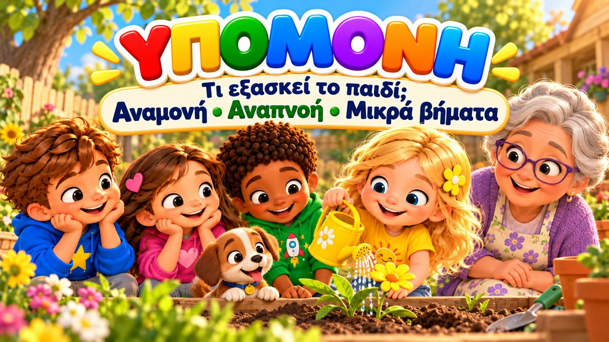
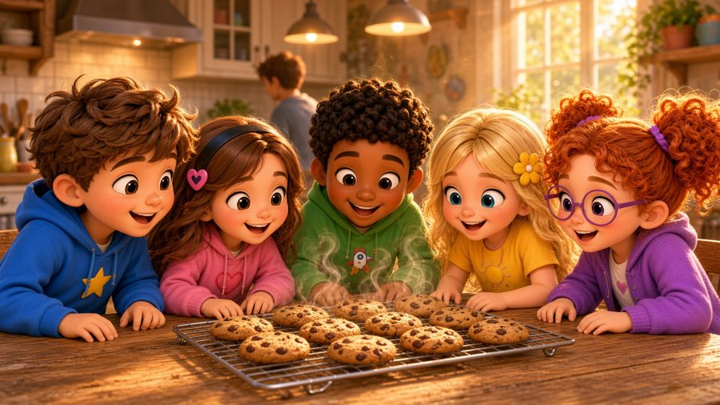

Τα όμορφα θέλουν χρόνο!
Ένα τραγούδι για την υπομονή! 🌱 Τραγουδήστε με τον Μαξ, τη Μία, τον Τζέι, τη Λίλη, τη Ρόζα και τον σκυλάκο Μπάντι, που μαθαίνουν ότι τα όμορφα θέλουν χρόνο: περιμένουμε τη σειρά μας, παίρνουμε μια ανάσα και προχωράμε βήμα βήμα.
Στο «Τα όμορφα θέλουν χρόνο» ο Μαξ περιμένει τη σειρά του στην τσουλήθρα, η Λίλη φυτεύει έναν σπόρο με τη γιαγιά Νελ και τον ποτίζει κάθε πρωί μέχρι να ανθίσει ένα κίτρινο λουλούδι, η Ρόζα τελειώνει ένα μεγάλο παζλ κομμάτι κομμάτι — κι όλοι περιμένουν να κρυώσουν τα μπισκότα. Με στίχους-καραόκε στην οθόνη, για παιδιά 3–8 ετών, στο σπίτι, στο νηπιαγωγείο και στα Εργαστήρια Δεξιοτήτων.

▶💡 Γιατί είναι σημαντικό: Υπομονή
Η υπομονή βοηθά τα παιδιά να περιμένουν τη σειρά τους, να αντέχουν το «όχι ακόμα» και να συνεχίζουν σε πράγματα που θέλουν χρόνο. Σε έναν κόσμο όπου όλα έρχονται αμέσως, αξίζει να την εξασκούμε συνειδητά. Φυτέψτε έναν σπόρο, ψήστε κάτι μαζί ή μετρήστε αντίστροφα για μια γιορτή — και δώστε στο παιδί απλά εργαλεία αναμονής, όπως μια ήρεμη ανάσα ή ένα τραγούδι.
👨👩👧 Τι μαθαίνει το παιδί
- Να περιμένει τη σειρά του χωρίς να αναστατώνεται
- Να ηρεμεί με μια ανάσα και ένα «ένα, δύο, τρία»
- Να προχωρά βήμα βήμα αντί να τα παρατά
- Ότι κάποια πράγματα θέλουν χρόνο για να μεγαλώσουν
- Ότι η αναμονή μπορεί να έχει κάτι υπέροχο στο τέλος
💬 Κουβέντα μετά το τραγούδι
- Για τι περίμενες τελευταία φορά;
🏅 Κουίζ & Πτυχίο
Είδατε το τραγούδι μαζί; Τώρα διαβάστε στο παιδί κάθε ερώτηση — το παιδί δείχνει τη σωστή εικόνα. Αν απαντήσει και στις 6 ερωτήσεις, κερδίζει ένα πτυχίο για εκτύπωση!
🔒 Το όνομα χρησιμοποιείται μόνο για να φτιαχτεί το πτυχίο στη συσκευή σας. Δεν αποθηκεύουμε και δεν στέλνουμε τίποτα.
Τα κατάφερες! 🎉
Και οι 6 απαντήσεις είναι σωστές! Γράψτε το όνομα του παιδιού για να φτιαχτεί το πτυχίο.
🖨️ Δωρεάν εκτυπώσιμα
Δωρεάν για χρήση στο σπίτι και στην τάξη. Εκτυπώστε σε χαρτί Α4.
🖼️ Σκηνές από το τραγούδι




🎵 Κι άλλα τραγούδια


🎤 Στίχοι – Τα όμορφα θέλουν χρόνο!
Είναι έτοιμο;
ΟΧΙ ΑΚΟΜΑ!
Ήρθε η σειρά μου;
ΟΧΙ ΑΚΟΜΑ!
Πρέπει να περιμένω;
ΛΙΓΑΚΙ!
Άλλα πράγματα γίνονται γρήγορα...
κι άλλα θέλουν χρόνο!
Ο Μαξ έτρεξε στην τσουλήθρα,
μα περίμεναν κι άλλα παιδιά.
«Θέλω τώρα να κατέβω!
Θέλω να έρθει η σειρά μου!»
Μα θυμήθηκε τι μπορεί να κάνει,
πήρε ανάσα βαθιά.
Περίμενε ήρεμα στη σειρά του
και κοιτούσε τα παιδιά.
Ένας ένας προχωρούσαν...
κι η σειρά του πλησίαζε!
Και σε λίγο—
«ΓΙΟΥΧΟΥ!»
Ήρθε η σειρά του τελικά!
Περιμένω λιγάκι,
δεν χρειάζεται βιασύνη.
Βήμα βήμα προχωράω,
όλα γίνονται στη στιγμή τους.
Δεν τα θέλω όλα τώρα,
μπορώ λίγο να περιμένω.
Παίρνω ανάσα...
και υπομονή μαθαίνω!
Τα όμορφα θέλουν χρόνο!
Τα όμορφα θέλουν χρόνο!
Μπορώ λίγο να περιμένω,
δεν τα θέλω όλα τώρα!
Παίρνω ανάσα,
ένα, δύο, τρία...
και περιμένω
με υπομονή!
Βήμα βήμα,
μέρα τη μέρα,
κάποια πράγματα
θέλουν υπομονή!
Δεν χρειάζεται
να γίνουν τώρα...
Τα όμορφα θέλουν χρόνο!
Η Λίλι φύτεψε έναν σπόρο,
τον σκέπασε απαλά με χώμα.
Του έβαλε λίγο νεράκι
και περίμενε με χαρά.
Την άλλη μέρα πήγε πάλι:
«Πού είναι το λουλούδι μου;
Γιατί δεν βγήκε ακόμα;»
Η γιαγιά Νελ χαμογέλασε:
«Δώσ' του χρόνο.
Βάλε νερό
και άφησε τον ήλιο να βοηθήσει.»
Κάθε μέρα η Λίλι ερχόταν,
λίγο νερό του έδινε ξανά.
Μέχρι που μια μέρα...
«ΚΟΙΤΑ!»
Ένα πράσινο βλασταράκι
ξεπρόβαλε απ' το χώμα!
Κι όσο περνούσαν οι μέρες,
ψήλωνε όλο και πιο πολύ...
μέχρι που ένα όμορφο λουλούδι
άνθισε εκεί!
Περιμένω λιγάκι,
δεν χρειάζεται βιασύνη.
(ρεφρέν)
(ρεφρέν)
Παίρνω ανάσα...
και υπομονή μαθαίνω!
(ρεφρέν)
(ρεφρέν)
Παίρνω ανάσα,
ένα, δύο, τρία...
και περιμένω
με υπομονή!
Βήμα βήμα,
μέρα τη μέρα,
κάποια πράγματα
θέλουν υπομονή!
Δεν χρειάζεται
να γίνουν τώρα...
Τα όμορφα θέλουν χρόνο!
Η Ρόζι έφτιαχνε ένα παζλ,
κομμάτια είχε παντού.
Δοκίμασε ένα,
δοκίμασε κι άλλο...
«Μα πού ταιριάζει αυτό;»
Δεν βιάστηκε,
κοίταξε καλά.
Ένα ένα
τα έβαζε στη σειρά.
Και ξαφνικά...
ΚΛΙΚ!
Το τελευταίο κομμάτι
μπήκε στη σωστή μεριά!
Και στην κουζίνα
μοσχομύριζαν μπισκότα.
«Μπορούμε να τα φάμε τώρα;»
«ΟΧΙ ΑΚΟΜΑ!»
Περιμέναμε λίγο
να κρυώσουν καλά...
και μετά—
«ΜΜΜΜ!»
Άξιζε η αναμονή τελικά!
Περιμένεις τη σειρά σου;
ΜΠΟΡΩ ΝΑ ΠΕΡΙΜΕΝΩ!
Περιμένεις να μεγαλώσει;
ΔΩΣ' ΤΟΥ ΧΡΟΝΟ!
Το παζλ δυσκολεύει;
ΒΗΜΑ ΒΗΜΑ!
Τα μπισκότα δεν είναι έτοιμα;
ΟΧΙ ΑΚΟΜΑ!
Βιάζεσαι;
ΠΑΡΕ ΑΝΑΣΑ!
Τα θέλεις όλα τώρα;
ΟΧΙ, ΜΠΟΡΩ ΝΑ ΠΕΡΙΜΕΝΩ!
Τι χρειάζονται τα όμορφα;
ΧΡΟΝΟ!
Κάποια πράγματα
θέλουν ένα λεπτό.
Κάποια θέλουν
μια ολόκληρη μέρα.
Κι άλλα χρειάζονται
πολλά μικρά βήματα.
Όταν περιμένω,
δεν σημαίνει
πως δεν συμβαίνει τίποτα.
Μπορεί κάτι
να μεγαλώνει.
Μπορεί εγώ
να μαθαίνω.
Μπορεί η σειρά μου...
να πλησιάζει!
(ρεφρέν)
(ρεφρέν)
Παίρνω ανάσα,
ένα, δύο, τρία...
κι εξασκώ
την υπομονή!
Περιμένω!
Δεν βιάζομαι!
Βήμα βήμα
προχωράω!
Οι σπόροι μεγαλώνουν!
Κι εγώ μαθαίνω!
Μέρα με τη μέρα
όλο και πιο πολύ!
Βήμα βήμα!
Μέρα τη μέρα!
Δεν χρειάζεται
να γίνει τώρα!
Τα όμορφα...
τα όμορφα...
ΤΑ ΟΜΟΡΦΑ ΘΕΛΟΥΝ ΧΡΟΝΟ!
Όχι ακόμα;
Δεν πειράζει!
Θα περιμένω
λίγο ακόμα.
Παίρνω ανάσα...
δίνω χρόνο...
Τα όμορφα θέλουν χρόνο!